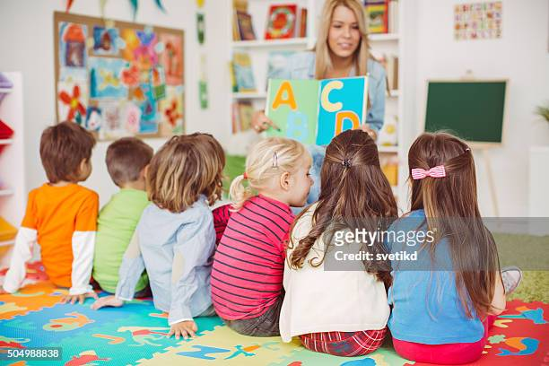
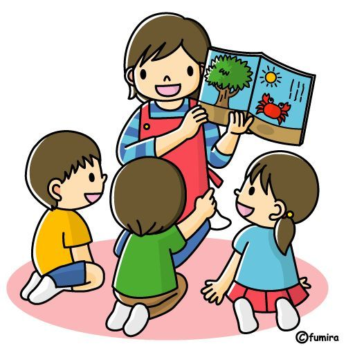

Kinder Mis Primeras Letritas
"Añadiendo colores a su sueño infantil"
𝐌𝐢𝐬𝐢ó𝐧
Ofrecer un servicio educativo de calidad que promueva una educación activa, abierta e integral del niño/a, formándole en valores morales, éticos y culturales que le ayuden a desarrollar todo su potencial personal y talento, involucrando y trabajando conjuntamente en este proceso con las familias, para conseguir una armonía en su formación como persona

𝐕𝐢𝐬𝐢ó𝐧
Ser una organización educativa que, a través del Sistema Montessori, brinde a los niños una formación espiritual e intelectual que contribuya en un futuro a la transformación de una sociedad de paz. Ofrecer las herramientas necesarias para la vida dentro de un ambiente preparado que proporcione los medios para conquistar independencia, libertad y autodisciplina. De esta manera estaremos contribuyendo a la formación del carácter y la personalidad del niño para que pueda triunfar en esta sociedad de cambios continuos.

𝐕𝐚𝐥𝐨𝐫𝐞𝐬
Promovemos los valores de respeto, aprecio, libertad, generosidad, sinceridad, confianza, justicia, solidaridad, responsabilidad, esfuerzo, compañerismo, cooperación, diversidad.

𝐇𝐢𝐬𝐭𝐨𝐫𝐢𝐚
El Kinder Prescolar "Mis Primeras Letras" fue inaugurado en el año 1962, siendo uno de los primeros en la capital. Desde entonces y hasta hoy, hemos apostado por ofrecer a nuestros alumnos/as una enseñanza de calidad basada en el fomento de valores éticos, morales y culturales. La gerencia en manos del matrimonio formado por Dña. Alina Giorgeta Martínez y D. Julio Rodrigo Montó y actualmente con la directora Emilia Peiró Pérez, hacen de este centro un referente dentro de la Educación Infantil en Mexico. El centro se distingue por contar con: personal altamente cualificado y con experiencia, aulas provistas de las últimas tecnologías, amplias instalaciones y patios exteriores con jardines soleados de 800m2 de superficie cada uno de ellos. El Centro de Educación Infantil Mis Primeras Letras pertenece a la “Secretaria De Educacion Publica”, formando también parte del mismo, los centros de formación profesional Rodrigo-Giorgeta y Capitol Empresa. El centro de Formación Profesional Específica de Grado Medio y Superior nace motivado por nuestra constante vocación. En él se imparten entre otras, la modalidad de Educación Infantil,experiencia y profesionalidad acumulada durante todos estos años.

𝐌𝐨𝐝𝐞𝐥𝐨𝐬 𝐄𝐝𝐮𝐜𝐚𝐭𝐢𝐯𝐨𝐬
En nuestro jardín de infantes, utilizamos una variedad de métodos y enfoques educativos, todos diseñados para que los niños aprendan mientras se divierten. Cada uno de estos modelos se enfoca en el juego, la exploración y la creatividad.

Nuestro enfoque principal es el juego. Los niños aprenden a través de actividades divertidas y creativas que fomentan la exploración.
Lo que destaca a este modelo cognitivo de los demás es que aquí no se pretende que los alumnos acumulen conocimientos, sino que se busca su desarrollo intelectual.
Nuestro modelo se centra en estimular los sentidos de los niños a través de actividades táctiles, visuales y auditivas que enriquecen su desarrollo cognitivo.
Los niños participan en proyectos interactivos que les permiten investigar, colaborar y resolver problemas mientras exploran temas que les interesan.
Inspirados en el método Montessori, promovemos la independencia y el autoaprendizaje. Los niños eligen sus actividades y avanzan a su propio ritmo.
Introducimos conceptos de Ciencia, Tecnología, Ingeniería y Matemáticas desde temprana edad, fomentando la curiosidad y la resolución de problemas.